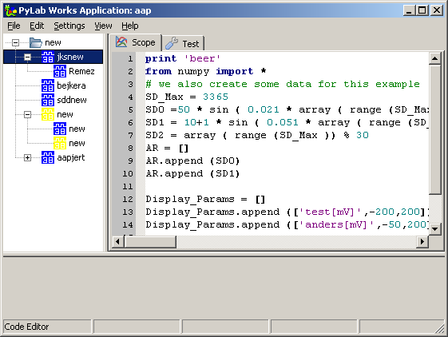
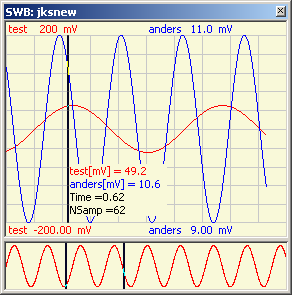

march 2008
Signal WorkBench 
History
About a year ago (april 2007) I build this functionality in Delpi with embedded MatLab. After discovering SciPy, I replaced the embedded MatLab with embedded Python and used it with even greater pleasure than with the embedded MatLab. I then wrote:
"Although it was my first intention to create this program completely in Python, I had the feeling that my knowledge of Delphi would result in a much quicker result, especially because of the calculation tree and the signal displays. (Maybe the overwhelming collection of different graphical libraries in Python also forced this choose. At the moment I've the feeling that wxWidgets is the future way to go, but I've no idea yet if and what wrapper to use for wxWidgets.)"
Half a year ago I needed a GUI for another project, and decided to go for wxPython (Qt seemed better, but has a weird license). Unfortunately I didn't succeeded in getting one of the visual IDE's working, but by now I'm completely used to write GUI in plane ASCII, although I use several homemade convenience libraries. By now the Signal Workbench written as a Control / Brick within the PyLab_Works frame is almost identical to the Delphi version and at some points even better.
ToDo
Introduction
The signal workbench is highly sophisticated graphical calculator, specially equipped for off-line analysis of time series and development of algorithm for real-time analysis.
The main items of the signal workbench are:
|
 |
|
|
 |
Calculation Tree
The global view of a total calculation is represented by a tree, where each node in the tree performs a (small) part of the calculation. The tree is fully synchronized with the editor on it's right side, and leaving a node, automatically saves any changes to the text in the editor of the previous node. You can either run a single node ( by pressing F9), or run the current node with all branches below it (by pressing shift-F9). The nodes in the tree can dragged and dropped, nodes can be copied / deleted including all their children. You can also put a general library (under construction) in a branch that's not executed, so the Signal WorkBench will serve as a nice editor.Don't use the top node at the moment, because I've special intentions with it.
|
Each node has an icon, clicking on the icon, toggles between 2 images, indicating if the output goes to the graphical display or not. For the following functions, there's a difference if you click the node text or the node icon: copy / insert / drop. When the action is performed on the icon, the new or moved item will be placed as the last child of that node, while the action on the text of a node, does place it just above the clicked node. Editing the name of the node (and thereby the filename where the code is stored) can be done by selecting and clicking again (not double clicking) or by select and space or by the right mouse menu. Leaving the edit, can be done by Enter-key or by selecting another node or something else. |
Each node in the calculation tree, is connected with a piece of Python code. Let's take a look at a simple example below:
The variable "DISPLAY" in line 40, tells which signals should be ported to the graphical display (in case the tree icon allows it). The following signals can be ported to the graphical display: tupple, list, 1-dim array, 2-dim array or any combination of these types. It isn't even necessary to make all elements equally length, Signal WorkBench will take care of that.
The variable list "Display_Params" in line 42..44 tells the graphical display the parameters of each of the signals. The parameters consists of the name of the variable (where you can specify the units of that signal between square brackets), the value at the lower side of the display and the value at the upper border of the display. This variable doesn't need to be present, and you're also allowed to specify parameters for the first set of parametersor just parts of the parameters, e.g. only the signals names.
Through F7, you can popup the code snippet manager, which is fully integrated,
|
Compiler Errors When a compiler error occurs, the Python error message is captured in the lower interactive editor (see picture below) and the cursor automatically jumps to the line with the error in the upper editor window. Note that the line numbers in the error message doesn't need to be the same as the line-number in the editor, this is because the script is pre-processed and so there are some extra lines added. You can always jump to the error, by clicking on the line in the lower interactive editor with the left mouse button, or by pressing Enter, when cursor is on the line "#<< File "<string>", ..." |
|
Signal Displays
The signal displays are highly automated, while leaving great flexibility both by programming and user manipulation. Signals can be viewed, zoomed and measured. The ability to make one or more signal displays transparent, gives a unique feature to overlay several signal displays for easy comparison. The signal displays are quit light-weighted, so you can have a lot of them open simultaneous.
Each signal display consists of 2 graphical windows, the bottom window (also called time-base window), holding the complete time-history of one selected signal, meant for navigating and selecting along the time-dimension. The top window, holding all (or a selected set) signals over a (possibly) limited time segment, is meant for zooming into details and for doing exact measurements.
The following items are used to control the appearance of the signal display:
Signal Selecting
through the RM-menu in the upper window you can select which signals are visible or not. Labels are automatically shown, with as much information as possible. Which part of the visible signals along the time-axis will be shown, is determined by the 2 cursors in the time-base window (showing the complete time-axis), which can be placed by LM and removed by MM (or RM-menu).
Through the RM-menu of the time-base window or by clicking on the signal label in the time-base window, you can select the signal that's used in the time-base window. The color of the signal in the time-base window is the same as the signal color in the main-window. The amplitude scaling of the signal in the time-base window is always automatic.
|
Signal Appearance By clicking on one of the lower or upper signal labels, the border values of the selected signal or all signals can be changed. |
|
Transparency Each signal display can be made transparent for easy comparing different algorithms. Transparency can be set through the RM-menu of any of the signal windows. Transparency only works for windows-2000 and up. The memo, displays a self expandable memo, to make some notes if you want to save the graph window. Linear expansion, does draw the expanded signal with linear interpolation, otherwise the signal is drawn stepwise (zero-order hold). |
|
History, RM-menu Remove Cursors, can also be done by clicking on the right of the visible signal. Dual Cursor, gives two cursors (both through the RM), which select the part of the signal which will be displayed in the normal window (top window). Single Expand 1, gives just 1 cursor, that displays exactly all the samples of the signal, starting at the cursor position. Single Expand 2, ditto, but signal is expanded 2 times. The lower items in the menu are the available signals, of which one can be selected to be shown in the history window. |
|
Cursor Measurement With the left-MB in the main signal window, you can position 2 cursors in the upper signal window for measurement. Removing of the cursors is done through the middle-MB or the RM-menu. Each cursor has a panel attached, in which the actual real-world values of the visible signals are shown. The vertical position of the panels is determined by the mouse cursor. The left panel will also show the startpoint of the signals, both in samples and in (mili-)seconds. The right panel will also display the distance between the 2 cursors both in samples and in (mili-)seconds. When the signal window has focus, the position of the cursors can be fine-tuned with the left-arrow and right-arrow key for the left cursor and shift-left-arrow and shift-right-arrow key for the right cursor. Larger steps can be made by the page-up and page-don key (+shift for the right cursor) |
Time Selection
The two top-items of the RM-menu are designed to select certain time regions for further calculations. With "Selection Set", a new marker is placed on the time-axis, toggling the selection on or off. In the figure above the dark green lines at the bottom, are the selected regions. Removing a toggle point is also done through the RM-menu.
If the selection is used in the next calculation is furthermore determined by the calculation function itself.